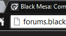

There are a few transparent pixels in the site’s logo. (the one shown on a browser’s tabs) This is unnoticeable on a white background, but for those with a dar theme, it makes the logo look weird.
Pictures:

icon ripped from the site:
the above pic with a pink background:

and zoomed in:
This was found in the Black Mesa ARG thread, and was suspected to be related to it, but it seems more likely that it was simply an oversight by whomever designed this part of the site.